프로젝트명
프로젝트 설명 프로젝트 설명 프로젝트 설명 프로젝트 설명 프로젝트 설명 프로젝트 설명 프로젝트 설명 프로젝트 설명
사용자 중심 경험을 설계하는 디자인 전문가 과정
문제 해결에서 디자인까지 사용자의 여정을 설계하다
협업 특강과 멘토링으로 완성도를 더해
기초부터 실무 감각까지 이어지는 커리큘럼, 만들면서 배우고 함께 부딪히며 성장하는 시간
제한된 시간 속에서 아이디어를 고도화하고, 팀원들과 밤을 새우며 결과물을 완성하는 몰입의 경험
현업의 생생한 트렌드를 배우는 특강과 디테일을 더해줄 전문가의 1:1 피드백 코칭 시간
실제 기업의 비즈니스 문제를 정의하고 완성도 높은 프로덕트를 직접 구축해 보는 최종 관문


프로젝트 설명 프로젝트 설명 프로젝트 설명 프로젝트 설명 프로젝트 설명 프로젝트 설명 프로젝트 설명 프로젝트 설명
프로젝트 설명 프로젝트 설명 프로젝트 설명 프로젝트 설명 프로젝트 설명 프로젝트 설명 프로젝트 설명 프로젝트 설명
⭐️⭐️⭐️⭐️⭐️
“실전 감각을 깨워주는 멘토님의 맞춤 가이드”
현직자의 생생한 경험을 바탕으로 질문의 의도를 정확히 파악하여 조언해주신 점이 인상적이었습니다. 실무적인 관점에서 상황을 해석해주시는 과정을 통해 앞으로의 과제를 어떻게 풀어나가야 할지 구체적인 방향을 잡을 수 있었습니다.
김OO님 | 생성형AI과정 1회차
⭐️⭐️⭐️⭐️
“실무 중심 이론 교육을 통한 인사이트 습득”
교육 과정이 실무에 적합하게 설계되어 있어 단순한 이론 학습 이상의 많은 인사이트를 얻을 수 있었습니다. 현업에서 필요로 하는 내용을 중심으로 이론을 접할 수 있어 만족스러웠습니다.
이OO님 | 백엔드과정 1회차
⭐️⭐️⭐️⭐️⭐️
"현직자의 시각으로 채워준 유익한 가이드"
프로젝트의 진도가 느린 상황에서도 유하게 대안을 제시해주시고, 기업 문화 등 실무적인 내용까지 폭넓게 공유해주셨습니다. 덕분에 현직자의 관점을 다각도로 접하며 멘토링 시간을 내실 있게 채울 수 있었습니다.
정OO님 | 사이버보안과정 1회차
⭐️⭐️⭐️⭐️⭐️
“실전 코드를 활용한 이론의 실질적 구현”
이론을 실제 코드로 구현하는 과정에서 Git 공유와 핵심 부분 공백 활용 등 효율적인 학습 환경이 제공되었습니다. 이를 통해 길어지는 코드 사이에서도 핵심 이론이 어떻게 적용되는지 집중해서 파악할 수 있었고, 이론을 실제 결과물로 체화하는 데 큰 도움이 되었습니다.
장OO님 | 프론트엔드과정 1회차
⭐️⭐️⭐️⭐️
“실무 프로세스는 최고지만 타이트한 시간”
실무와 동일한 환경에서 디자인 시스템과 AI 워크플로우를 경험할 수 있어 성장에 큰 도움이 됩니다. 멘토님의 비즈니스 관점 피드백도 매우 유익했습니다. 다만, 커리큘럼 밀도가 높아 프로젝트를 다듬을 시간이 조금 부족한 점은 아쉬웠습니다.
최OO님 | 프로덕트다자인과정 1회차
⭐️⭐️⭐️⭐️⭐️
“실전 감각을 깨워주는 멘토님의 맞춤 가이드”
현직자의 생생한 경험을 바탕으로 질문의 의도를 정확히 파악하여 조언해주신 점이 인상적이었습니다. 실무적인 관점에서 상황을 해석해주시는 과정을 통해 앞으로의 과제를 어떻게 풀어나가야 할지 구체적인 방향을 잡을 수 있었습니다.
김OO님 | 생성형AI과정 1회차
⭐️⭐️⭐️⭐️
“실무 중심 이론 교육을 통한 인사이트 습득”
교육 과정이 실무에 적합하게 설계되어 있어 단순한 이론 학습 이상의 많은 인사이트를 얻을 수 있었습니다. 현업에서 필요로 하는 내용을 중심으로 이론을 접할 수 있어 만족스러웠습니다.
이OO님 | 백엔드과정 1회차
⭐️⭐️⭐️⭐️⭐️
"현직자의 시각으로 채워준 유익한 가이드"
프로젝트의 진도가 느린 상황에서도 유하게 대안을 제시해주시고, 기업 문화 등 실무적인 내용까지 폭넓게 공유해주셨습니다. 덕분에 현직자의 관점을 다각도로 접하며 멘토링 시간을 내실 있게 채울 수 있었습니다.
정OO님 | 사이버보안과정 1회차
⭐️⭐️⭐️⭐️⭐️
“실전 코드를 활용한 이론의 실질적 구현”
이론을 실제 코드로 구현하는 과정에서 Git 공유와 핵심 부분 공백 활용 등 효율적인 학습 환경이 제공되었습니다. 이를 통해 길어지는 코드 사이에서도 핵심 이론이 어떻게 적용되는지 집중해서 파악할 수 있었고, 이론을 실제 결과물로 체화하는 데 큰 도움이 되었습니다.
장OO님 | 프론트엔드과정 1회차
⭐️⭐️⭐️⭐️
“실무 프로세스는 최고지만 타이트한 시간”
실무와 동일한 환경에서 디자인 시스템과 AI 워크플로우를 경험할 수 있어 성장에 큰 도움이 됩니다. 멘토님의 비즈니스 관점 피드백도 매우 유익했습니다. 다만, 커리큘럼 밀도가 높아 프로젝트를 다듬을 시간이 조금 부족한 점은 아쉬웠습니다.
최OO님 | 프로덕트다자인과정 1회차
과정 목표와 방향성을 설명하고, 상세 커리큘럼 및 학습 일정을 소개합니다.
제품 가치 정의와 디자인 컨셉 도출, 사용자 중심 목업 제작과 피드백 수렴 방법을 학습합니다.
디자인 요구사항 분석과 산출물 관리, 협업 및 리뷰 시스템을 체계적으로 운영하는 방법을 익힙니다.
공통 UI 컴포넌트, 스타일 가이드, 디자인 토큰 적용 및 협업 도구 활용법을 습득합니다.
AI 모델 연동과 프롬프트 엔지니어링, 디자인 자동화와 혁신적 워크플로우를 실습합니다.
사용자 행동 데이터 분석, A/B 테스트, KPI 기반 UX 평가 및 지속적 개선 전략을 학습합니다.
매월 과정 별 역량 평가 및 피드백을 진행합니다. 최신 구직 동향 및 사례를 연구하며, 자기 PR을 위한 효과적인 취업 전략을 학습합니다.

글로벌 테크 기업부터 스타트업 C-Level까지, 실무 리더십과 글로벌 감각을 겸비한 프로덕트 디자인 전문가
현직 전문가와의 1:1 혹은 그룹 멘토링을 통해 실무경험과 진로 방향에 대한 깊이 있는 인사이트를 얻습니다.
TECH UP의 훈련생들이 모여 아이디어를 구체화하고 팀워크로 완성하며 실전 같은 프로젝트 경험을 쌓는 대규모 해커톤입니다.
현직 전문가와의 1:1 혹은 그룹 멘토링을 통해 실무경험과 진로 방향에 대한 깊이 있는 인사이트를 얻습니다.
업계 전문가들이 직접 전하는 생생한 현장 사례와 노하우를 통해 최신 기술 동향과 직무 역량을 배울 수 있습니다.
현업 개발자에게 코드 품질과 구조에 대한 피드백을 받아 실무 수준의 개발 역량을 빠르게 성장시킬 수 있습니다.
업계 전문가들이 직접 전하는 생생한 현장 사례와 노하우를 통해 최신 기술 동향과 직무 역량을 배울 수 있습니다.
수료생이 입사한 곳
100% 실시간 온라인 캠퍼스
놓친 내용이나 부족한 부분은 언제든 다시 보충할 수 있도록, 모든 강의는 수강 기간 내 녹화본으로 상시 제공됩니다.
끝까지 완주할 수 있도록 출석과 학습 스케줄을 꼼꼼히 챙기고, 수업 중에 흐트러지지 않도록 서포트하는 전담 매니저가 함께합니다.
혼자가 아닌 연결의 힘으로 성장의 속도를 높이세요. 수강생, 수료생, 강사진이 함께하는 네트워킹을 통해 평생 든든한 커리어 네트워크를 만듭니다.
구름스퀘어 강남의 쾌적한 공간에서 팀원들과 직접 협업하며 실무와 같은 프로젝트 경험을 쌓을 수 있습니다. 대면 소통을 통해 커뮤니케이션과 팀워크 역량을 자연스럽게 키울 수 있습니다.
대회 가상현실 기반의 메타버스 환경에서 시간과 장소 제약 없이 몰입감 있는 학습과 협업을 경험할 수 있습니다. 실제와 유사한 협업 과정을 온라인에서도 생생하게 체험할 수 있습니다.
클라우드 실습 및 과제 수행에 필요한 최적의 구동 환경과 리소스를 제공합니다.
AI와 함께라면 학습이 더 빠르고 똑똑해집니다.
챌린저의 빠른 성장을 위해 1개월 간 인프런 강의를 무제한으로 지원합니다.
각 직군별 맞춤형 모의 테스트(코딩 테스트, 실무 과제 등)를 통해 실력을 검증하고 한 단계 도약하세요.
성장의 밑거름으로 월 최대 300,000원의 훈련장려금이 지급됩니다.
기기 성능 걱정 없이 교육에만 몰입할 수 있도록, 프로젝트 수행에 최적화된 고사양 노트북 대여 서비스를 제공합니다.
TRACK 1
프로젝트와 포트폴리오만으로 빠르게 선발할 수 있습니다.
과정 지원
지원서 및 고용24 수강신청
26.4.9 (목) - 26.5.25 (월)
최종 합격
본 전형은 별도의 면접 없이, 제출 서류를 바탕으로 최종 합격 여부가 안내됩니다.
서류 제출 후 5영업일 이내 최종 합격 발표
TRACK 2
가능성을 지닌 지원자는 그룹 면접으로 협업, 인성을 확인합니다.
과정 지원
지원서 및 고용24 수강신청
- 26.5.25 (월)
서류 합격
26.5.26 (화)
면접
26.5.28 (목) - 26.5.29 (금)
최종 합격
26.6.2 (화)
※ Portfolio Battle 전형은 선착순으로 조기 마감될 수 있습니다.
※ Portfolio Battle 전형 지원자는 평가에 따라 Hidden Gem 면접 전형으로 이어서 진행될 수 있습니다.
※ 일정 외 지원자에게는 별도의 절차를 통해 개별 안내드립니다.
※ 정원은 선발 가능 최대 인원을 의미하며, 평가 기준을 충족하지 못한 경우 정원이 미달되더라도 선발하지 않을 수 있습니다.
1. 현재 페이지에서 지원서를 작성합니다.
2. 고용24 사이트에 접속 하여, 본 교육 과정을 신청합니다.
3. 제출하신 지원서를 기반으로 서면 심사 및 선발 과정이 진행됩니다.
4. 합격 결과 안내 및 교육 과정 준비 사항이 안내됩니다.
*HRD-Net 미신청 및 자비부담금 미결제 시, 해당 과정을 수강 하실 수 없습니다.
지원서가 제출된 경우, 지원서에 작성한 이메일로 지원 완료 안내 메일이 발송됩니다.
간혹 스팸 메일로 분류되는 경우가 있으니 스팸 메일함도 함께 확인해주시기 바랍니다.
제출한 지원서는 수정이 불가합니다. 제출 전 오기입 된 내용은 없는지 확인 후 제출 바랍니다.
고용24 로그인 → 나의 정보 → 나의 훈련 → 온라인 수강 신청 이력
위 경로를 통해 수강 신청 현황을 확인할 수 있습니다.
마감일 전까지 동일 페이지에서 수강 신청 취소도 가능합니다.
서류 전형과 면접 전형을 거쳐 한정된 인원만 선발합니다.
서류 전형과 면접 전형은 학력이나 스펙에 관계없이 지원서 내용을 토대로 선발하고 진행되오니, 지원서를 성실하게 작성해주세요.
zoom을 통해 비대면 다대다 면접으로 진행됩니다.
지원서 내용을 바탕으로 면접이 진행되오니 성실하게 지원서를 작성해주세요.
[고등학교 졸업자/비전공자]
Q. 고등학교 졸업자 혹은 비전공자도 신청할 수 있나요?
A. 네, 가능합니다. K-디지털 트레이닝 과정의 경우 학력·전공과 무관하게 국민내일배움카드를 발급 받을 수 있습니다. 높은 학습 의지를 가지신 분이라면 누구나 신청할 수 있습니다.
[대학교 재학생]
Q. 현재 대학교 재학 중입니다. 학교와 병행이 가능한가요? 취업계처럼 학점 인정이 가능한가요?
A. 졸업까지 남은 수업연한이 2년 이내이며, 훈련 전체 일정에 지장 없이 실시간으로 참여가 가능한 경우 신청이 가능합니다. 취업계 등의 학점 인정은 불가능하니 주의해주세요.
[재직자]
Q. 재직자도 신청이 가능한가요?
A. 국민내일배움카드 발급이 가능하고 훈련 기간 동안 과정에 온전히 참여하실 수 있다면 신청이 가능합니다.
*상세 운영 시간은 과정별 상세 페이지를 참고해주세요.
[해외 거주자, 체류자]
Q. 현재 해외에서 거주하고 있습니다. 수강이 가능한가요?
A. 아쉽지만, 수강이 불가합니다. 해외체류‧여행·근로·운전·보행 등 훈련에 성실히 참여하기 어려운 환경에서 참여하는 경우 출결이 불인정될 수 있습니다. 따라서 과정 참석에 제한이 있습니다.
K-디지털 트레이닝 중복 지원은 가능하나, 중복 수강은 불가합니다.
K-디지털 트레이닝 훈련 과정은 국민내일배움카드 기준으로, 5년 이내 최초 1회 수강 시 자비부담금(최대 60만원)을 제외한 훈련비 전액 정부 지원으로 수강하실 수 있습니다.
단, 과정에 재참여하시는 경우 훈련비 전액이 자비부담으로 적용될 수 있으니, 수강 신청 전 관할 고용센터를 통해 정확한 부담 여부를 확인해 주시기 바랍니다.
네, 병행 가능합니다. 단, 지원 전 반드시 국민취업지원제도 담당자에게 알린 후 담당자를 통해 고용24 수강신청을 진행해주셔야 합니다.
아직 일정이 확정되지 않았습니다. 모집 기간이 종료된 이후 모집 알림 받기를 신청해 주시면 개별 안내드립니다.
국민취업제도 대상자의 경우 담당 상담사님에게 제출할 훈련탐색표가 필요합니다.
아래 과정에 맞는 훈련과정탐색표를 다운로드 받아 상담사님에게 전달해주시면 됩니다.
평일 09시 ~ 18시 비대면 실시간 강의의 형태로 진행됩니다.
비대면 실시간 강의란 정해진 시간에 화상 회의 플랫폼(ZEP)을 활용하여 비대면으로 실시간 강의를 수강하거나 실습을 진행하는 형식입니다.
모집 페이지에서 상세 커리큘럼을 통해 확인하실 수 있습니다.
커리큘럼은 각 과정마다 상이합니다.
비대면 실시간 수업이 진행되는 동안 모든 훈련생은 카메라를 ON 해야 합니다.
원활한 강의 진행을 위해 마이크는 OFF 하는 것을 기본으로 합니다.
입/퇴실 시 고용24 출결관리 앱을 통한 QR 출석을 통해 진행됩니다.
강의 수강과 프로젝트를 진행할 수 있는 PC(마이크,웹캠 포함) 또는 노트북이 필요합니다.
네, 가능합니다. 신청자에 한해서 훈련 기간 동안 고성능 실무용 노트북 대여를 지원합니다. 자세한 내용은 최종 선발자 대상으로 별도 안내됩니다.
Windows10 OS 이상 또는 MacOS | Intel core i5 또는 Apple M1 이상 | 메모리 16GB 이상 | HDD 256GB 이상 권장
권장 사양 이하일 경우 실습이 원활하지 않을 수 있습니다. 고성능 실무용 노트북 대여 지원 혜택을 참고해 주세요.
본 과정은 PC로 학습하는 훈련으로, 모바일 학습은 지원되지 않습니다.
학습을 지속할 수 없어 중도하차를 하는 경우, 국비지원에 대한 위약금은 발생하지 않습니다.
다만, K-디지털 트레이닝 1회 참여로 간주되어 이후 K-디지털 트레이닝 과정에 다시 참여하시는 경우 훈련생의 자비부담금이 발생합니다.
네, 맞습니다. 지급대상자에게는 단위 기간별 출석률 80% 이상일 때 기존 훈련장려금과 특별훈련수당이 합산되어 지급됩니다. 단위 기간(1개월)별 최대 300,000원을 지급받을 수 있으나, 고용노동부의 정책에 따라 변동될 수 있습니다.
아래에 해당되는 분들은 발급 받을 수 없습니다. (자세한 문의는 고용노동부 1350)
재학생의 경우, 졸업연한이 2년 남은 재학생부터 졸업예정자까지 지원이 가능합니다.
하지만 훈련 과정이 주 5일 수업으로 이루어지기 때문에 수강에 어려움을 겪을 수 있습니다.
2026년도 K-디지털 트레이닝 정책 개편에 따라 내일배움카드로 수강 시 자비부담금(60만원)이 발생할 수 있으나, 대부분의 교육비가 국비로 지원되는 만큼, 적은 부담으로 탄탄한 실무 역량을 쌓으실 수 있습니다.
자비부담금은 훈련생 별 내일배움카드 유형에 따라 상이하며 관할고용센터를 통해 수강 자격을 확인하실 수 있습니다.
0원인 경우를 제외하고 잔액 상관 없이 신청 가능합니다.